SenselApp Software
The SenselApp is your entry point for maintaining and modifying your Sensel Morph. It can be used for simple tasks such as updating firmware or visualizing the contacts and pressure, modifying existing overlays to better match your workflow, or radically transforming your overlays from their intended purpose into completely custom controllers. In short, the SenselApp can be used to execute all the possibilities of the Morph.
Download
You can download the SenselApp using these links:
SenselApp Overview
When an overlay is selected in the SenselApp, your screen will appear as below.
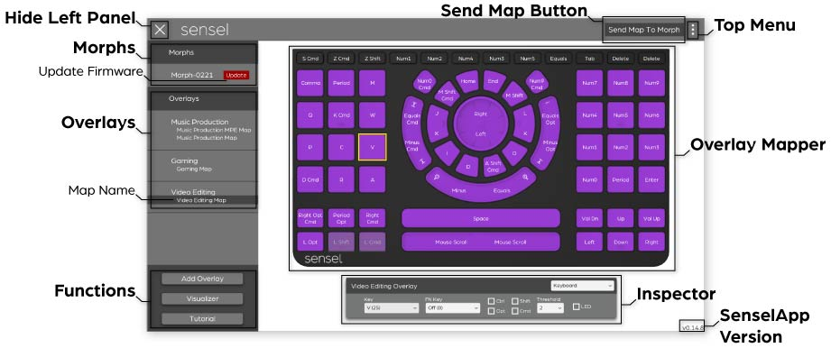
- Morphs - A list of all the Morphs attached via USB to your computer. Click on one in the list to get information about the Morph, such as serial number, firmware version, and battery level. You can also set the “No Overlay” Mode here.
- Update Firmware - A red “Update Firmware” indicates that Sensel has a new version of the firmware available for your morph. It is best to always update when possible. Click on the Morph's name in the Morphs panel to show the Update Firmware button.
- Overlays - This area shows all overlays and their associated maps that you have added to the Sensel App for the selected Morph. Only one map for each overlay type can be loaded on the Morph.
- Map Name - Click the Map Name to bring up the Overlay Mapper and edit its values. You must press Send Map to Morph to make these changes present on the Morph.
- Functions:
- Add Overlay - Click this button to add a new overlay and modify the controls for any given overlay.
- Visualizer - Click to turn on the visualizer to view all contacts and their pressure levels.
- Feedback - Provide feedback on the SenselApp or Sensel Morph.
- Overlay Mapper - Click on a Map Shows the selected overlay and its controls for editing and re-assigning. Click on any control to fill the Inspector with current values.
- Send Map Button - Click to send to the Morph any changes made to the Map with the SenselApp.
- Inspector - Used to edit the output and behavior of any control, such as changing its type, key value, or MIDI message output.
- Top Menu - Contains functions for copying, editing, and sharing map files for the different overlays.
- Hide Left Panel - Click the X in the top left to hide the left panel.
- Current SenselApp Version - shows the version number of the Sensel App.
You'll also notice that a dot appears next to one of the Map names for each overlay. This indicates the Map is what is currently programmed to the Morph. When you plug in your Morph, it reads what maps have been flashed to the Morph and then compares it to the list of maps in your app. If the same map exists, then a dot is placed next to the map.
SenselApp Preferences
The Preferences for settings and all your map files are stored in:
- Mac:
~/Library/Application Support/unity.Sensel.SenselApp/ - Windows:
%appdata%/../LocalLow/Sensel/SenselApp/
Key Commands
There are several keyboard combinations that can make working with the SenselApp easier. Hold CMD (macOS) or CTL (Windows/Linux) and:
- click - select or deselect many items
- A - select all
- C - copy attributes for currently selected items
- V - paste. If you copy multiple items, you will need to select the same number of items to paste.
- Z - undo
- Q - quit the app
Video guides
We have several tutorials about the SenselApp on our YouTube channel.
- (Complete overview)[https://www.youtube.com/watch?v=9aaatA149sQ]
- (Copy and Paste)[https://youtu.be/tjBBfh2fVk0]
- (Selecting, Deselecting, and Building a Grid)[https://youtu.be/hGf8-VMEbSc]
Morph-XXXX (Morph Settings)
When a Morph is selected in the SenselApp, your screen will look similar to below.
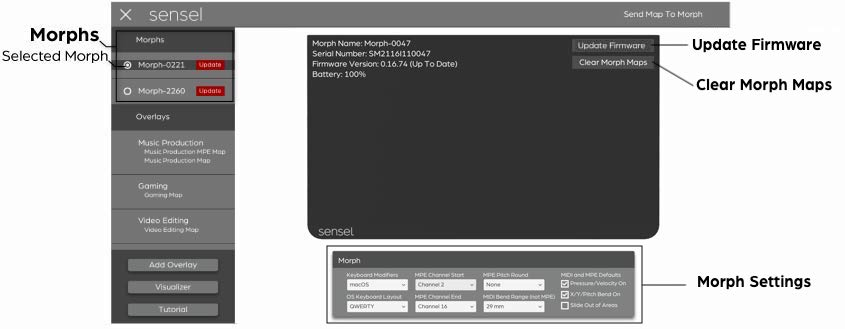
- Selected Morph - Select a Morph from the list of USB-connected Morphs to display the Morph Info screen.
- Morph Info - Shows Morph name, serial number, firmware version, and battery level.
- Update Firmware - click to download firmware files from Sensel servers and update the firmware on the device.
- Clear Morph Maps - Clear all Map files that have been uploaded to the Morph.
- Morph Settings - Use this menu to change the default behavior of the Morph.
- Keyboard Modifiers - Switch the Keyboard Modifiers in the Sensel App to show up as Windows (Alt/Win) or macOS (Opt/Cmd).
- OS Keyboard Layout - Set the OS Keyboard Layout for your Morph to either QWERTY, AZERTY or Dvorak. This does not change the output of the Morph, only how keyboard events are shown in the SenselApp.
- MPE Channel Start - The first channel for MPE.
- MPE Channel End - Then last channel for MPE.
- MPE Pitch Round - Choose from several pitch rounding algorithms. None, Jump (jumps from note to note), Smooth (rounds along a sinusoid periodic oscillation), or Gravity (as you move from note to note, the pitch moves towards the closest note over time).
- MIDI Pitch Bend Range - The full range of the Pitch Bend, in millimeters (mm). This only effects MIDI, not MPE control areas. We use millimeters because the bend is reliant on spatial gestures and size of the control or "note producing pad," which varies from overlay to overlay. The easy way to think about this is that 29mm will produce the most bend with a gesture, and 460mm will produce the least.
- Pressure/Velocity On - Whether pressure and velocity are on by default for MIDI and MPE.
- X/Y/Pitch Bend On - Whether X, Y, and Pitch Bend are on by default for MIDI and MPE.
- Slide Out of Areas- Whether you can slide out of control areas for MIDI and MPE. This allows for notes to only be created when you press down and end when you lift up. Entering and leaving control areas is now ignored.
- Slow Charge (iOS USB) - enable this to connect your Morph to an iPhone or iOS via USB. This lets you connect via USB without needing a powered USB hub. This is incredibly handy for simple connections. The downside to this is that your Morph will charge VERY slowly when connected to a computer.
Of course anytime you make changes in this panel, you'll need to click the top right "Send Settings to Morph" button.
To quit the app, you can use Alt+F4, Cmd+Q (Mac), Control+Q (Win), or click the close button on the title menu if it is available.
Visualizer
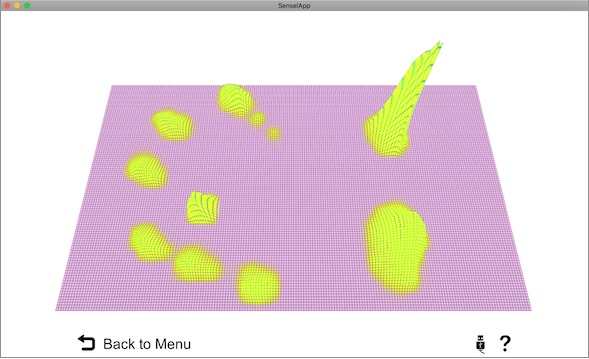
Before we get too busy, let's have a little bit of fun. Click on the Visualizer button and attach a Morph. Press on the sensor with your fingers, and see the corresponding pressure image on your computer screen.
Use the Visualizer to view the raw pressure information coming from the Morph's sensor. The visualizer is more than entertaining, it's a look behind the scenes of what happens when you are using the Morph.
You can see the effects of using different materials between a stylus (or some other actuator, like a finger) and pressure surface. You can even see that very sharp styli won't generate much of a pressure reading, and benefit greatly from a material or overlay.
The curious and creative user will find great satisfaction in the Visualizer!
SenselApp: First Use
The first time you use the Sensel App, it will appear with the Help hints visible, which you can read over and turn off using the Tutorial button. You may need to update the firmware - just click on the Morph name and then click the Update Firmware button in the Morph Info window.
To get started editing controls on your overlays, click "Add Overlay" and select the type of overlay you want to add:
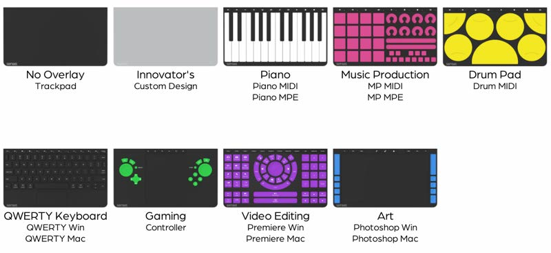
Notice there are multiple labels under some Overlays. These are alternate mappings that make it easy to set up an overlay. If you select an MPE or Mac variant, you'll need to "Send Map to Morph" for those settings to work on your Morph.
If you place an overlay on the Morph before you open the App, the SenselApp will open in the Overlay Mapper view, showing the Overlay you placed on the Morph.
Editing an Overlay
Editing an Overlay's output and behavior is fairly straightforward, though the large array of options can make it seem complicated. Simply put, modifying a single control takes 4 steps.
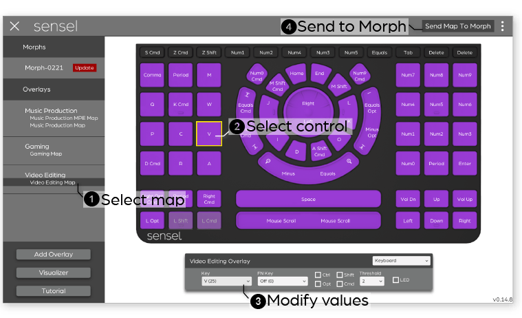
- Select an overlay
- Click on a control
- Change values in the inspector
- Send Map to Morph
You can repeat steps 2 & 3 several times, making all your edits, then send the map to the Morph when you are ready to try your changes.
An edit can be very simple. For example, on the video editing overlay, you may want to adjust the controls for Apple Final Cut Pro. The Selection button outputs the letter v for Adobe Premier, but Final Cut Pro X uses the letter a for the shortcut. Making this change is as simple as selecting A (4) from the Key menu:
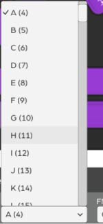
You can, of course, make very different changes. You can add modifiers for other macro commands in a video editing software, or even go into left field and make it send a MIDI message to control music software.
All the different types of controls and the values you can change in the Inspectors are documented below.
Sharing Maps
Any setup you create for an overlay can be easily exported and shared with other people. Once you have created a setup use the top left menu to select "Export Map":
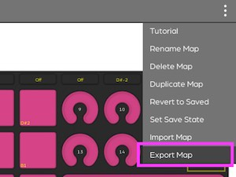
You'll get a dialog to save the map to a folder on your computer and give the map a name. The ".senselmap" extension is automatically added to the file:
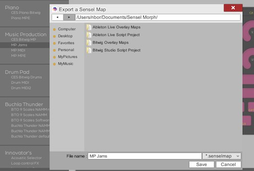
Once you have exported your map file, you can share it on our forum
When you want to import a map that you have downloaded or moved to another computer, you can select "Import Map" from the menu:
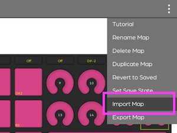
and use the dialog to navigate to map file on your computer:
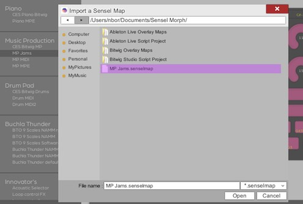
If you have several maps you want to share, you may find it easier to grab the existing maps in your preferences folder. The SenselApp saves the map files at:
- Mac:
~/Library/Application Support/unity.Sensel.SenselApp/ - Windows:
%appdata%/../LocalLow/Sensel/SenselApp/
Top Menu
The top right menu has several functions for managing individual map files.
- Tutorial - toggles hints for a quick reminder of what each section is for
- Rename Map - renames the currently selected map
- Delete Map - deletes the currently selected map
- Duplicate Map - creates a copy of the map currently selected in the left pane
- Revert to Saved - reverts all settings to the Overlay's saved map
- Set Save State - creates a memory of all the settings for the current Overlay, used for "Revert To Saved"
- Import Map - opens a file selection dialog to select a map file to import into the App
- Export Map - save the currently selected map to a file you can share
It is worth notig that the SenselApp saves all changes made to Overlay maps as they are made. So if you have the habit of saving files, use the "Set Save State" function.
Control Types
With the Morph, everything is anything. That is to say, any individual control can be assigned to behave like any control found on any overlay. Want 16 mice on your Music Production overlay? Want to turn your QWERTY keyboard into a MIDI controller? Want to turn the Video Editor into a DJ controller? All this is very very possible. Here's the rundown on all the possible types of controls you can create.
Keyboard
When pressed, the control sends messages that you would find on a regular computer keyboard used for typing or data entry.
- Key - Keyboard scan code (or letter) to output on press
- Function Key - Keyboard scan code (or letter) to output on press when the fn key is held down. Of course, you'll need to assign a different control to act as the fn key, which is done by assigning a key with scan code 255 (FN).
- Modifier - Ctl, Opt, Shift, CMD modifier to combine with a press on this control. Used for creating macros, such as Ctl-S to save a file in a Windows application.
- Threshold - pressure threshold. Lower values make the control require less pressure to register a press.
- LED - blink (checked) or don't blink (unchecked) the nearest LED on the LED strip when the control is pressed.
MIDI Note
When pressed, a combination of MIDI messages are sent, with the first message sent being of the Note type, similar to a regular piano keyboard.
- Channel - MIDI Channel the messages from this control are sent on.
- Note - MIDI note to send on press. The note-on velocity corresponds to the initial pressure of the contact. Can be left off so the control only sends a message on pressure.
- After-Pressure - MIDI Message to send to report pressure values while the control is held down. These can be MIDI Continuous Controller messages, Pitchbend, Polyphonic Aftertouch, or Channel Aftertouch type.
- Threshold - pressure threshold. Lower values make the control require less pressure to register a press.
- LED - blink (checked) or don't blink (unchecked) the nearest LED on the LED strip when the control is pressed.
- Pitch Bend - Whether this control area sends pitch bend events when pitch bend is active.
MIDI CC
When pressed, a combination of MIDI messages are sent, with the first message sent being of the Continuous Controller type. When the control is pressed, a CC value of 127 is sent. When the control is released, a CC value of 0 is sent. This is useful for controlling buttons in different music softwares.
- Button Type - CC button is Momentary (sends 127 on press and 0 on release) or Toggle (switches between 127 and 0 for each press)
- Channel - MIDI Channel the messages from this control are sent on.
- CC - CC number to send values of 127 (down) and 0 (up).
- After-Pressure - MIDI Message to send to report pressure values while the control is held down. These can be MIDI Continuous Controller messages, Pitchbend, Polyphonic Aftertouch, or Channel Aftertouch type.
- Threshold - pressure threshold. Lower values make the control require less pressure to register a press.
- LED - blink (checked) or don't blink (unchecked) the nearest LED on the LED strip when the control is pressed.
Media
Media refers to the control keys for displays and sound commonly found on computer keyboards. This allows any control to act as a system-level control for your computer's audio and video apps.
- Media - type of control, such as Volume, Display Brightness, Next/Previous track, Play/Pause, Home, App Switch, or Search.
- FN Key - a secondary key code value that will be sent when a fn key is held down.
- Modifier - Ctl, Opt, Shift, CMD modifier to combine with a press on this control. Used for creating macros, such as Ctl-S to save a file in a Windows application.
- Threshold - pressure threshold. Lower values make the control require less pressure to register a press.
- LED - blink (checked) or don't blink (unchecked) the nearest LED on the LED strip when the control is pressed.
Gamepad
When pressed, a Gamepad control sends out a USB Gamepad control code.
- Type - determines how motions are interpreted. Square button, Circle button, and Joystick react differently to touch inputs, providing either button-like or continuous control.
- Button - value sent on press. Joystick with button sends joystick commands an a button on press.
- Threshold - pressure threshold. Lower values make the control require less pressure to register a press.
- LED - blink (checked) or don't blink (unchecked) the nearest LED on the LED strip when the control is pressed.
MMC (MIDI Machine Control)
MMC System Exclusive (sysex) messages are used to control the transport of software and hardware recorders and sequencers.
- MMC Message - Message sent on press.
- After-Pressure - MIDI Message to send to report pressure values while the control is held down. These can be MIDI Continuous Controller messages, Pitchbend, Polyphonic Aftertouch, or Channel Aftertouch type.
- Threshold - pressure threshold. Lower values make the control require less pressure to register a press.
- LED - blink (checked) or don't blink (unchecked) the nearest LED on the LED strip when the control is pressed.
Morph MIDI Modifier
The MIDI Modifier type modifies the MIDI values sent out the Morph. For many of these, no messages are sent, rather, these simply modify the messages the Morph will send.
- Custom MIDI - type of modifer, such as Octave Up/Dn (+/- 12 notes), Scene Up/Down (+/- 16 notes, for Ableton and Bitwig drum racks), MIDI Program change, and others.
- After-Pressure - MIDI Message to send to report pressure values while the control is held down. These can be MIDI Continuous Controller messages, Pitchbend, Polyphonic Aftertouch, or Channel Aftertouch type.
- Threshold - pressure threshold. Lower values make the control require less pressure to register a press.
- LED - blink (checked) or don't blink (unchecked) the nearest LED on the LED strip when the control is pressed.
MPE
MIDI Polyphonic Expression(MPE) allows electronic instruments to be played with much more control and dimension than simply turning a note on or off. A single control can send the note, velocity, pitch bend on side-to-side motions, expression on vertical slides on the control, and afterpressure. MPE-compliant synths can react to all of this played data for exceptional expression. The Morph takes it a step further and allows you to use all the data in different ways.
- Note - Note value to send on press.
- Press - Message type to send on Pressure. MPE standard is to send Channel Aftertouch for pressure.
- X - Message type to send on X, or side-to-side, motions on the control. MPE standard is to send Pitch Bend messages for X.
- Y - Message type ot send on Y, or up-down motions on the control. MPE standard is to send CC 74 messages for Y.
- Pitch Bend - Pitch bend range for any pitch bend events.
- Threshold - pressure threshold. Lower values make the control require less pressure to register a press.
- 14-bit - Check on to send 14-bit resolution messages for Pressure and Y dimensions. This adds an additional Continuous Controller to the data output to create two 7-bit messages.
- Absolute X Position - If on, then the physical center of the control is the center point for X. If off, then the point of initial contact is the center point for X values.
- Absolute Y Position - If on, then the physical center of the control is the center point for Y values. If off, then the point of initial contact is the center point for Y values.
- LED - blink (checked) or don't blink (unchecked) the nearest LED on the LED strip when the control is pressed.
Touchpad
The Touchpad control type creates a mouse or digitizer pointer that can be found on laptops and tablets. This functionality can be found on the Art Overlay by default and can be brought over to other Overlays. While the Trackpad should work well on most Overlays, we do not recommend using the Paintbrush or Stylus Area on other Overlays since they have not been calibrated for this purpose. We have also included the buttons to switch Touchpad Area Types, just like on the Art Overlay.
-
Touchpad Type - Mouse and digitizer control areas and buttons to switch all control areas to this type.
- Switch to Stylus - Switch all Touchpad control areas to being a Stylus Area. The settings used in this switch will be mapped onto the control area.
- Switch to Paintbrush - Switch all Touchpad control areas to being a Paintbrush Area. The settings used in this switch will be mapped onto the control area.
- Switch to Trackpad - Switch all Touchpad control areas to being a Trackpad Area. The settings used in this switch will be mapped onto the control area.
- Stylus Area - A digitizer that includes palm detection and stylus detection so that only a stylus is recognized. Please only use with the Art Overlay.
- Paintbrush Area - A digitizer that draws the first contact applied to the control area. Please only use with the Art Overlay.
- Trackpad Area - A mouse cursor trackpad, like you would find on a laptop. Can be used on all Overlays. Use higher thresholds and click activations when the overlay control area is thicker.
- Windows 10 Trackpad - A mouse cursor trackpad, like you would find on a laptop. Can only be found on the No Overlay.
-
Click Activation - A threshold that will determine if you are clicking on the trackpad.
- Threshold - pressure threshold. Lower values make the control require less pressure to register a cursor movement.
- LED - blink (checked) or don't blink (unchecked) the nearest LED on the LED strip when the control is pressed.
Setting
The Setting control type provides buttons and toggles that change the behavior of the entire Overlay.
- Setting - Various settings available to control the Overlay.
- Set Threshold - Toggle to set all the control areas to have the same threshold.
- Reset - Reset all the toggles for the Overlay. Used on MIDI Overlays to reset Pitch Bend, Velocity and Octave.
- Value - value to be set when the setting is a toggle.
- Threshold - Pressure threshold. Lower values make the control require less pressure to register a press
- LED - blink (checked) or don't blink (unchecked) the nearest LED on the LED strip when the control is pressed.
Keyboard Slider
A keyboard slider type sends repeated keystrokes depending on the direction you are stroking the slider. You can find these types of controls on the Video Editing Overlay's defaults for Zoom, Audio, and Video sliders.
- Slider Type - Switch the slider type between Vertical Slider, Horizontal Slider or Knob.
- Right/Up - depending on the orientation of the control, you'll see Right or Up. Assign a key value to send repeatedly.
- Left/Down - depending on the orientation of the control, you'll see Left or Down. Assign a key value to send repeatedly.
- Modifier - Ctl, Opt, Shift, CMD modifier to combine with a press on this control. Used for creating macros, such as Ctl-S to save a file in a Windows application.
- Threshold - pressure threshold. Lower values make the control require less pressure to register a press.
- LED - blink (checked) or don't blink (unchecked) the nearest LED on the LED strip when the control is pressed.
MIDI CC Slider
A MIDI CC Slider is used to send continuous values, depending on the position of the touch. Useful for filter sweeps, volume envelopes, and other effects.
- Slider Type - Switch the slider type between Vertical Slider, Horizontal Slider or Knob
- Channel - MIDI Channel the messages from this control are sent on.
- CC - CC message to send with continuous value.
- After-Pressure - MIDI Message to send to report pressure values while the control is held down. These can be MIDI Continuous Controller messages, Pitchbend, Polyphonic Aftertouch, or Channel Aftertouch type.
- Threshold - pressure threshold. Lower values make the control require less pressure to register a press.
- LED - blink (checked) or don't blink (unchecked) the nearest LED on the LED strip when the control is pressed.
Knob Modifier
The Knob Modifier overrides the Knob values when pressed. Used on Video Editing Overlay by default to override the Knob settings.
- CW - Assign a key value to send repeatedly when moving clockwise.
- CCW - Assign a key value to send repeatedly when moving counter-clockwise.
- Modifier - Ctl, Opt, Shift, CMD modifier to combine with a press on this control. Used for creating macros, such as Ctl-S to save a file in a Windows application.
- Threshold pressure threshold. Lower values make the control require less pressure to register a press.
- LED - blink (checked) or don't blink (unchecked) the nearest LED on the LED strip when the control is pressed.
Pressure Button
Unique to the Morph, the Pressure button control sends repeated keystrokes with the repetition speed varying by pressure.
- Down - assign a key code to send repeatedly when pressing down on the button.
- Up - assign a key code to send once when the button is released.
- Modifier - Ctl, Opt, Shift, CMD modifier to combine with a press on this control. Used for creating macros, such as Ctl-S to save a file in a Windows application.
- Threshold - pressure threshold. Lower values make the control require less pressure to register a press.
- LED - blink (checked) or don't blink (unchecked) the nearest LED on the LED strip when the control is pressed.
XYZ MIDI Pad
Set MIDI X, Y and Z for a control area on a MIDI channel.
- Note - Note value to send on press.
- Press - Message type to send on Pressure.
- X - Message type to send on X, or side-to-side, motions on the control.
- Y - Message type ot send on Y, or up-down motions on the control.
- Channel - MIDI Channel the messages from this control are sent on.
- Threshold - pressure threshold. Lower values make the control require less pressure to register a press.
- 14-bit - Check on to send 14-bit resolution messages for Pressure and Y dimensions. This adds an additional Continuous Controller to the data output to create two 7-bit messages.
- Absolute X Position - If on, then the physical center of the control is the center point for X. If off, then the point of initial contact is the center point for X values.
- Absolute Y Position - If on, then the physical center of the control is the center point for Y values. If off, then the point of initial contact is the center point for Y values.
- LED - blink (checked) or don't blink (unchecked) the nearest LED on the LED strip when the control is pressed.
Innovator's
Only available on No Overlay. The Sensel Morph will behave like the Innovator's Overlay is on the Morph. Allows for testing of the Overlay Designer when you do not own an Innovator's Overlay.
Overlay Mapper
Music Overlays
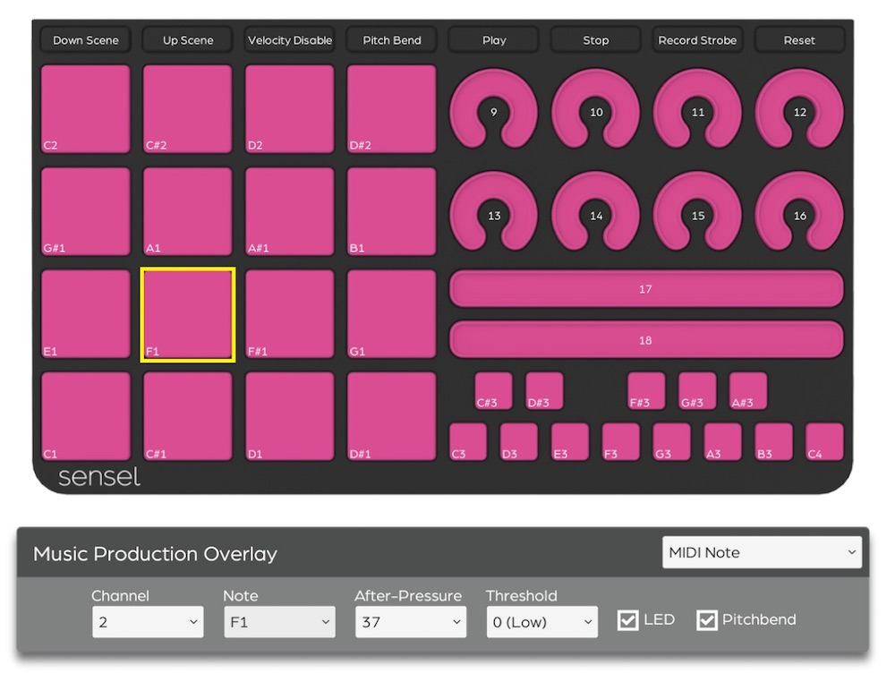
The Music Production, Drum, and Piano Overlays can be completely modified from their default settings to work however you’d like them to.
When you select a music Overlay from the Sensel App, you'll open a screen where you can click on the different buttons or regions to modify the MIDI notes sent from the pads.
Use the inspector's menu to select a different note value for each pad you want to change. You can save the settings to a map preset.
When finished editing, be sure to click "Send Map to Morph" to modify the settings.
Buchla Thunder Presets
Use the SenselApp to edit the presets for the Thunder Overlay. Select a preset to edit from the top Preset Selectors. Then, edit the controls on the Thunder by clicking on them, and changing values in the Inspector. If you want to copy and paste a preset to another, simply select all (CMD or CTL-A) then copy (CMD or CTL-C), then select a Preset at the top. Select all again, then paste (CMD or CTL-V). This copies all the settings to the preset.
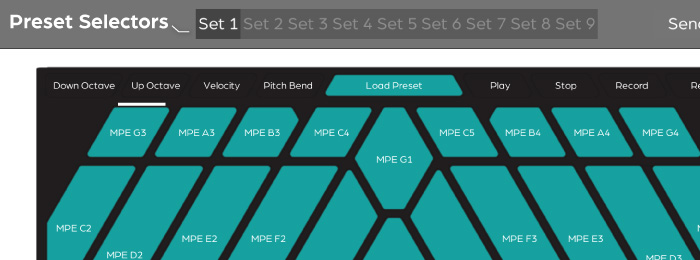
QWERTY (+ AZERTY and DVORAK) Overlay
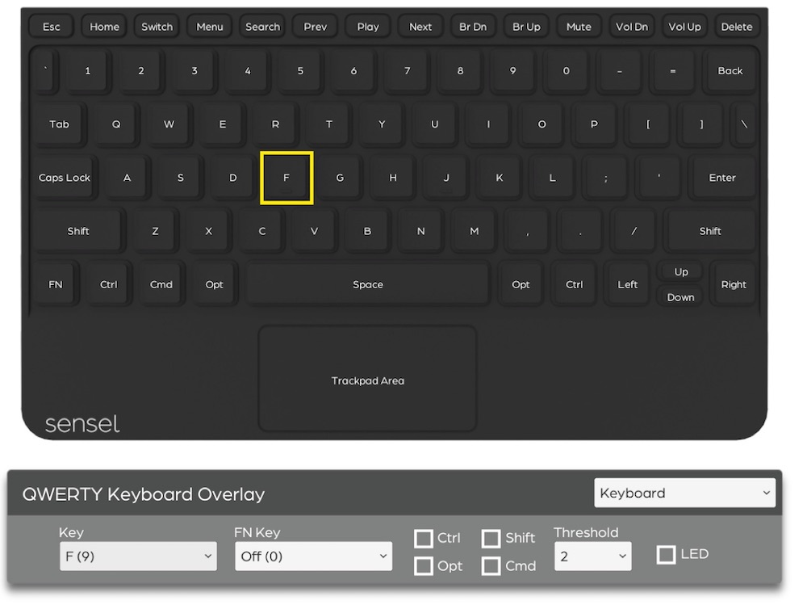
In a way, the mapper for the QWERTY Overlay is very similar to the music editors. However, instead of modifying MIDI notes, you are modifying the key event codes from each stroke. A list of keyboard codes can be found at this link.
Set Keyboard Layout
The Morph will detect the Overlay attached to the device, but you will need to change the desired layout for each computer or smartphone.
If you want to do this automatically, simply load the keyboard overlay map in the Sensel App, select Revert to Original in the top menu, and then Send Map to Morph. This will adjust for Windows and Mac automatically.
If you want to do it yourself, here are some external links to guides (and opinions) on changing your keyboard layout for different operating systems:
Gamepad Overlay
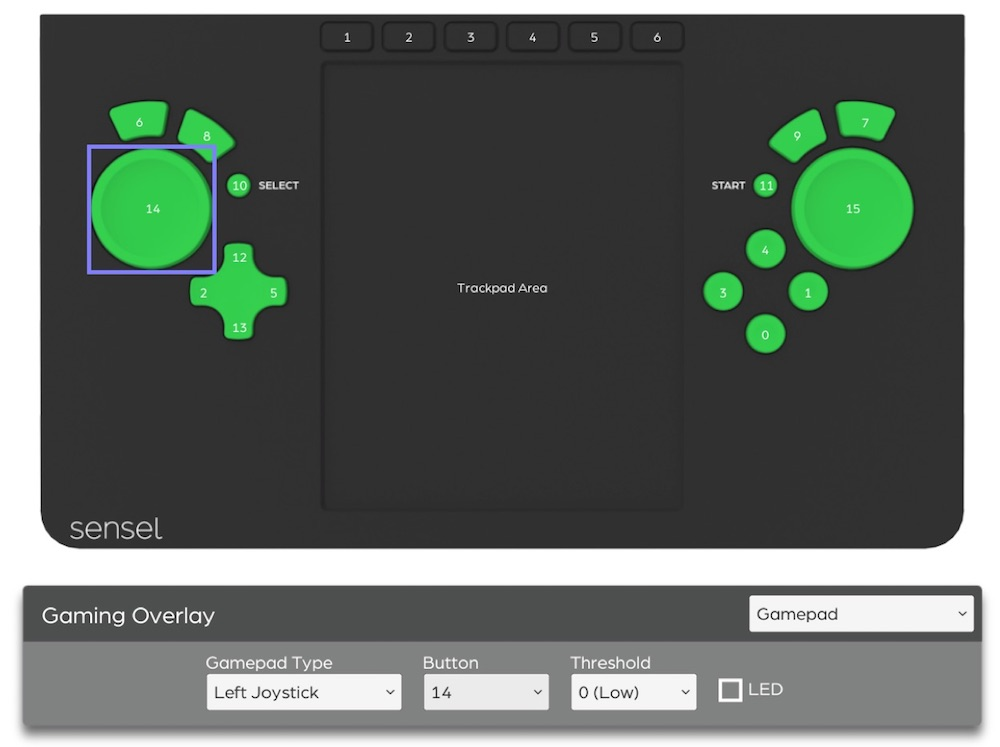
Some games support HID gamepad events without any emulation, but do not let you customize the button values in the game. As a result, the controller might work, but the buttons all do the wrong thing! The Sensel App lets you change the HID gamepad value for each button of the Gamepad Overlay so the controls can match the gameplay.